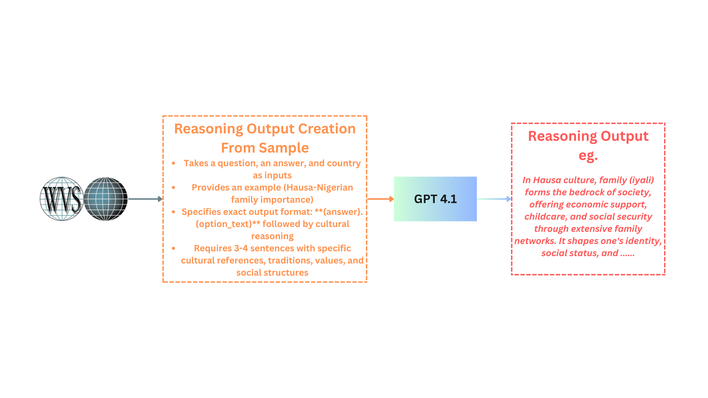
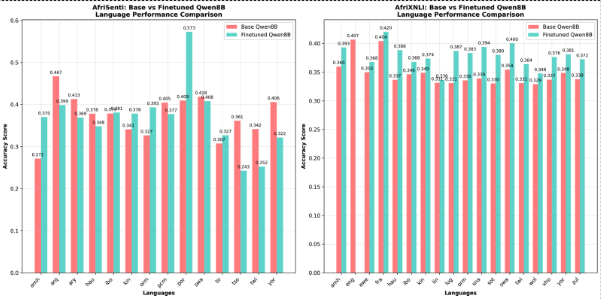

The 98% Problem: Why Most of Africa is Left Behind in AI
Over 2000 languages spoken across Africa, only about 42 receive any form of support in existing AI language models.
That means 98% of African languages are completely unsupported by the technology that's reshaping our world. This isn't just a technical oversight – it's a digital divide that's leaving entire communities behind in the AI revolution.
While English speakers benefit from AI assistants that understand context, culture, and nuance, African language speakers face AI systems that misunderstand their cultural values. This gap doesn't just limit access to technology; it actively perpetuates bias and misinformation while denying communities crucial economic and educational opportunities.
There is an urgent need for a novel fine-tuning technique for low-resource African languages
The Cultural Context Crisis
When AI systems are primarily trained on English data from Western contexts, they miss the nuanced ways different cultures think, reason, and communicate. For instance, the concept of family responsibility varies dramatically between Western individualistic societies and African communal cultures. An AI trained primarily on Western data might completely misunderstand why "making my parents proud" is a central life goal in many African cultures.
The Current State of AI in African Languages
Existing approaches to solve this problem fall into two categories, both with serious limitations:
Prompting Techniques: Researchers try to use clever prompts to make AI systems think like specific cultures. While this sounds promising, it's like asking someone who only speaks English to suddenly understand Yoruba cultural nuances—the underlying knowledge just isn't there.
Custom Training: Building AI models from scratch with more African data. This works but requires massive computational resources and datasets that are often scarce for low-resource languages.
What We Set Out to Discover
Our research tackled a fundamental question: Can we efficiently teach existing AI models to understand and respect African cultural values without requiring massive resources? We focused on 17 African cultures and languages, including Hausa, Yoruba, Amharic, Swahili, Zulu, and many others.
Our Novel Idea: Teaching AI to Think with Cultural Reasoning
We started with the World Values Survey (WVS)—a massive international research program that has been studying human values across cultures since 1981. This survey covers 120 societies worldwide and tracks beliefs, values, and norms across social, political, economic, and religious dimensions. Think of it as a cultural DNA database for humanity.
From this rich dataset, we manually selected 122 questions covering topics like family values, work ethic, religious beliefs, and political views—areas where African and Western perspectives often differ significantly.
Adding Cultural Reasoning to Outputs
Previous approaches would take a question like "Do you agree that making your parents proud should be a main life goal?" and simply generate variations of the same question with an output like "1. agree" But that misses the WHY behind cultural responses.
Our new approach adds a reasoning layer that generates cultural explanations. For example, when an Ethiopian participant answers "very important" to family questions, our system generates reasoning like:
"In Ethiopian culture, family forms the bedrock of society, offering economic support, childcare, and social security through extensive family networks. It shapes one's identity, social status, and cultural values. Religious teachings underscore honoring family as a core obligation. The extended family system fosters mutual obligations and collective decision-making vital for survival and well-being."
Our Technical Approach
- Data Collection: We sampled cultural values data from 17 African language communities across 9 countries
- Cultural Identity Prompting: We explicitly instructed AI models to think as citizens of specific countries speaking specific languages
- Semantic Augmentation: We generated thousands of culturally-grounded training examples from just 122 seed questions
- Efficient Fine-tuning: Using QLoRA (Quantized Low-Rank Adaptation), we fine-tuned five different language models without requiring massive computational resources
4 Out of 5 Models Showed Improved Performance
Our cultural fine-tuning approach delivered measurable improvements across multiple AI models:
- Gemma-27B: +5.1% improvement (our biggest success story)
- Qwen-8B: +4.9% improvement
- Qwen-32B: +1.3% improvement
- Mistral-7B: +2.2% improvement
- Llama-8B: -1.8% (the one model that struggled)
Effectiveness of Cultural Reasoning: Reasoning vs No Reasoning
| Task | Finetuned_qwen_8B_noR | Finetuned_Qwen_8B | Difference |
|---|---|---|---|
| afriqa | 0.2140 | 0.2029 | -0.0111 |
| afrisenti | 0.3638 | 0.3672 | 0.0034 |
| afrixnli | 0.3608 | 0.3784 | 0.0176 |
| Overall_Average | 0.3129 | 0.3162 | 0.0033 |
Adding cultural reasoning yields small but meaningful gains overall. It helps most on understanding relationships between statements (afrixnli, +0.0176), provides a marginal lift in sentiment (afrisenti, +0.0034), and shows a slight tradeoff on extractive QA (afriqa, −0.0111). On average, reasoning improves Qwen‑8B by +0.0033, indicating that lightweight cultural reasoning can nudge models toward better culturally grounded decisions without heavy retraining.
Language-Specific Discoveries
Looking at individual African languages revealed fascinating patterns:
Languages that showed biggest improvement:
- Yoruba: 23% improvement in sentiment analysis
- Ewe: 15% improvement in sentiment analysis
- Kinyarwanda: 16% improvement in natural language inference
- Igbo: 14% improvement in natural language inference
The Challenges We Faced
The Evaluation Dilemma
One of our biggest challenges was evaluation. Current benchmarks for African languages are often just translations of English datasets, which don't capture true cultural understanding. When our Hausa model performed slightly worse on these translated tests, was it really getting worse, or was it actually becoming more culturally authentic and diverging from English-centric standards?
This points to a critical need in African NLP: we need evaluation metrics rooted in African cultural contexts, not Western frameworks translated into local languages.
Resource Constraints
Time Limitations: Due to project constraints, we could only evaluate three tasks and couldn't include larger-scale models like GPT-4.
Computational Limits: While our approach is more efficient than training from scratch, fine-tuning still requires significant computational resources that limit accessibility for some researchers.
Data Complexity
Culture is incredibly multifaceted. While the World Values Survey provides rich data on social values, it doesn't capture everything—from local idioms and humor to historical narratives and traditional knowledge systems.
Small Step Towards Decolonizing AI
This research is part of a larger movement to make AI truly global. Currently, AI development is dominated by a handful of tech companies in the US and China, training models primarily on English and Chinese data. This creates AI systems that reflect only a narrow slice of human experience.
Cultural AI for All: Our methodology could extend beyond African languages to any underrepresented culture—from Indigenous American communities to Pacific Islander societies.
Redefining AI Success: Instead of measuring AI progress only by performance on English benchmarks, we need metrics that capture cultural authenticity and community relevance.
What We Learned for Next Time
Broader Data Sources: Future work should incorporate social media, literature, oral histories, and other cultural artifacts beyond survey data.
Better Evaluation: We need to develop culturally-grounded benchmarks that measure authentic cultural understanding rather than translation accuracy.
Community Involvement: Real cultural alignment requires deep collaboration with native speakers and cultural experts throughout the development process.
This research represents a step toward more inclusive AI that celebrates and incorporates the rich diversity of African cultures. As AI continues to reshape our world, ensuring it reflects all of humanity's wisdom isn't just ethical—it's essential for building better, more effective AI systems.
Key Resources
Source Code: AfricaLLM GitHub Repository
Dataset: AfricaLLM Dataset
Finetuned Models: Models finetuned with AfricaLLM dataset
World Values Survey: The foundational cultural dataset spanning 120 societies
AfroBench: State-of-the-art benchmark for African language evaluation